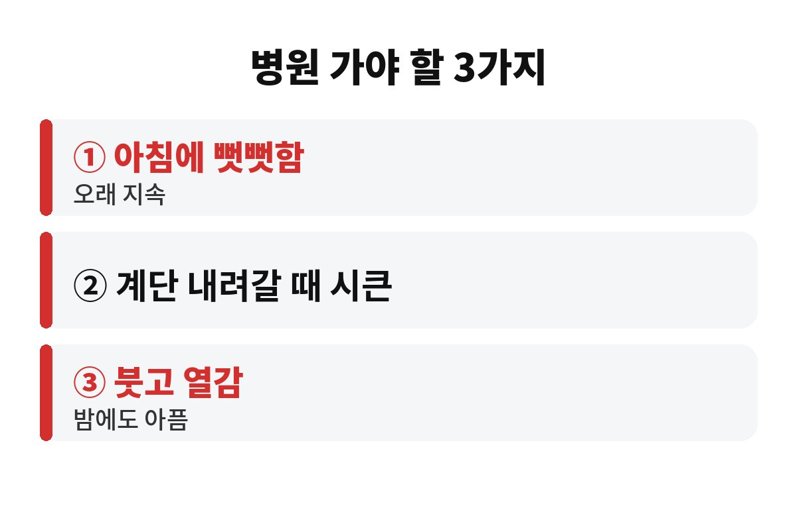
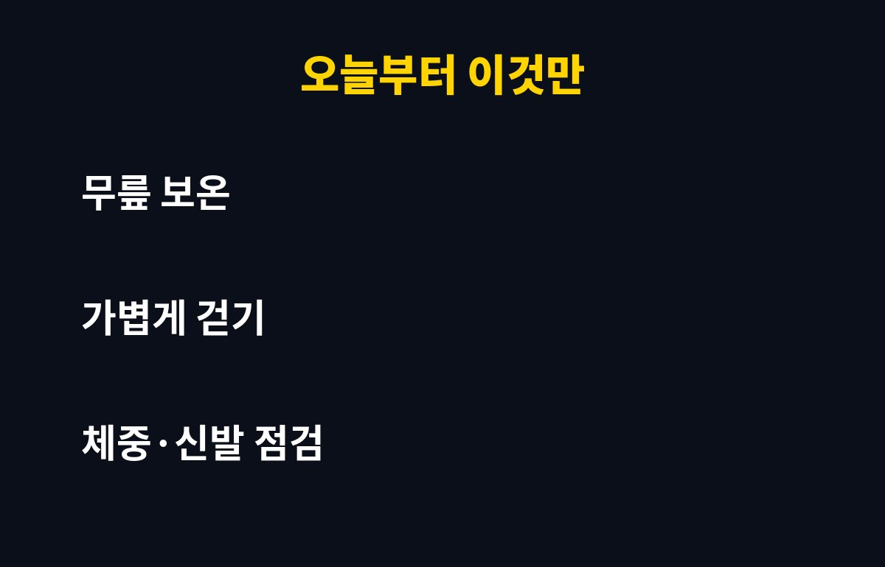

환절기 무릎 통증은 날씨 탓만이 아니라 아침 뻣뻣함, 계단 내려갈 때 시큰거림, 붓고 열감 있는 통증 3가지가 겹치면 관절 문제를 의심해 봐야 해요. 가을 아침마다 무릎이 시큰한 40·50대라면 이 신호를 그냥 넘겨도 될까요?
"날이 쌀쌀해져서 그렇겠지" 하고 참다가 겨울을 통째로 아프게 보내는 분이 의외로 많아요. 오늘은 환절기 무릎 통증이 왜 심해지는지, 어떤 경우에 병원에 가야 하는지 차근차근 짚어볼게요.
기온이 내려가면 근육과 힘줄이 굳고 혈액순환이 느려져요. 관절 주변이 뻣뻣해지니 밤새 가만히 있다가 첫발을 디딜 때 무릎이 더 시큰한 거죠. 그래서 환절기 무릎 통증은 아침과 비 오는 날 더 도드라지는 경우가 많아요.
여기에 일교차까지 커지면 몸이 체온을 지키려고 근육을 계속 긴장시켜요. 무릎을 받치는 허벅지 근육이 뻣뻣해지면 관절이 받는 부담이 그대로 늘어난답니다. 나이가 들수록 연골이 닳은 상태라면 같은 날씨에도 통증을 훨씬 크게 느끼고요.
다만 날씨는 통증을 "키우는" 요인이지 원인 자체는 아니에요. 이미 무릎이 약해져 있던 사람이 환절기에 먼저 신호를 보내는 경우가 많다는 점, 꼭 기억해 두세요.

아래 표를 한번 비교해 보세요.
| 지켜봐도 되는 경우 | 진료가 필요한 경우 |
| 움직이면 금방 풀리는 뻣뻣함 | 풀리지 않고 오래 이어지는 뻣뻣함 |
| 많이 걸은 날만 약하게 뻐근함 | 계단을 내려갈 때마다 시큰하고 불안정함 |
| 쉬면 며칠 안에 좋아짐 | 붓고 열감이 있거나 밤에도 욱신거림 |
오른쪽 칸에 하나라도 해당하고 몇 주째 이어진다면 정형외과에서 확인받는 게 좋아요. 퇴행성 관절염 같은 문제는 초기에 관리할수록 훨씬 수월하거든요. 반대로 왼쪽 칸이라면 생활 습관만 바꿔도 충분히 나아질 수 있어요.
이건 상황에 따라 달라요. 뻣뻣하고 시린 느낌이라면 따뜻한 찜질이 도움이 되는 경우가 많아요. 혈액순환이 좋아지고 굳은 근육이 풀리니까요. 반대로 방금 삐끗했거나 붓고 열이 나는 상태라면 냉찜질이 먼저예요.
헷갈린다면 이렇게 기억하세요. 만져서 뜨겁고 부었다면 차갑게, 차갑고 뻣뻣하면 따뜻하게요. 그래도 증상이 심하다면 스스로 판단하지 말고 진료를 받는 게 안전해요.
첫째, 무릎을 따뜻하게 지키세요. 얇은 무릎 보호대나 긴 양말, 바지 하나만 더 챙겨도 아침 통증이 확 달라지는 분이 많아요. 둘째, 일어나자마자 바로 움직이기보다 누운 채로 무릎을 천천히 굽혔다 펴는 준비 동작을 해주세요.
셋째, 안 움직이는 게 정답은 아니에요. 평지를 가볍게 걷거나 실내 자전거처럼 관절에 무리가 덜한 운동이 무릎 주변 근육을 지켜줘요. 넷째, 체중이 늘면 무릎이 받는 부담도 커지니 급하게 말고 천천히 관리하는 게 좋고요. 마지막으로 쿠션이 있는 편한 신발을 신어 주세요.
의외로 오래 앉아 있는 습관이 무릎에 좋지 않아요. 한자리에 오래 앉아 있으면 관절이 굳고, 일어설 때 갑자기 힘이 실리면서 시큰함이 커지거든요. 한 시간에 한 번쯤은 일어나 가볍게 걸으며 무릎을 풀어 주세요.
바닥에 오래 쪼그려 앉거나 양반다리를 하는 자세도 무릎에는 부담이에요. 가능하면 의자나 쿠션을 활용하고, 계단은 난간을 잡고 천천히 오르내리세요. 작은 습관이지만 환절기 무릎 통증을 줄이는 데 생각보다 큰 차이를 만들어요. 통증이 있는데 참고 무리하게 운동하는 것도 피하셔야 해요.

요약하면 환절기 무릎 통증은 대부분 날씨 때문에 도드라지지만, 오래 이어지거나 붓고 열감이 있다면 몸이 보내는 경고일 수 있어요. 혹시 요즘 아침에 무릎이 시큰한 가족이 있다면 이 글을 한번 공유해 주세요. 도움이 되셨다면 구독해 두시고 다음 건강 이야기도 함께 챙겨 가세요!
※ 이 글은 일반적인 건강 정보이며 진단·치료를 대신하지 않습니다. 증상이 있다면 반드시 전문의와 상담하세요.